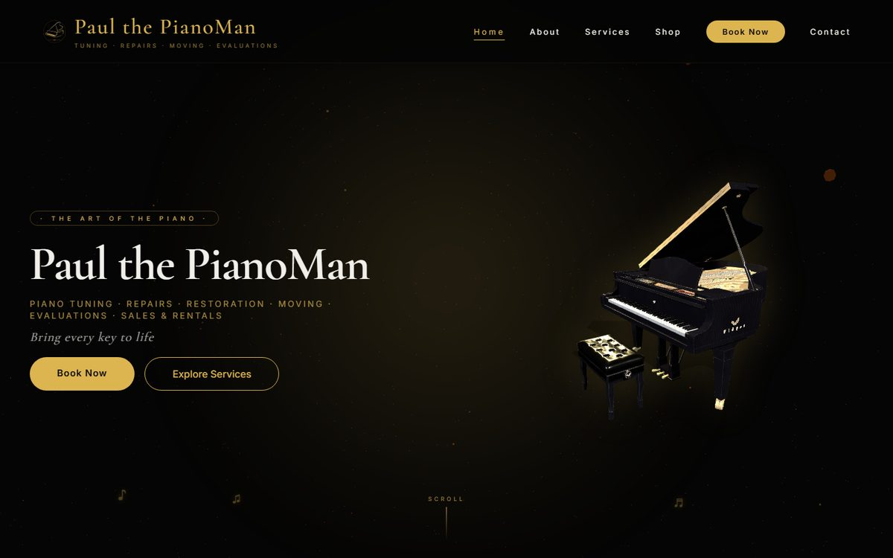

Work Experience
Software Engineer
Motsoeneng Bill · Johannesburg
- Led a three-engineer team building a business-development CRM: split the work, reviewed pull requests, and owned the backend, infrastructure and AWS environment. The team worked to a protected
mainbranch with code-owner reviews and GitHub Actions CI, including container vulnerability scanning and SBOM generation. - Backend engineer on an enterprise legal case-management platform (Java 21, Spring Boot, Spring Modulith) in a five-person team: built the intake, 20-stage lifecycle state machine, activity timeline and allocation modules, plus the financial provisioning and invoice modules, with role-based separation of duties, multi-tenant row-level security and Testcontainers integration tests.
- Main developer of a staff engagement platform used live by employees at a company convention: leaderboard, quizzes, a QR-code scavenger hunt, an awards ballot with Excel/PowerPoint reporting, a timed team escape-room game with a live scoreboard, and a feedback survey with autosave.
- Deployed and operated systems on AWS (EC2, S3, SSM) with Docker Compose, Terraform, Caddy/HTTPS and custom-domain DNS, including the AWS deployment of a compliance application pilot. Designed for flat monthly cost, with budget alerts and automated database backups verified by a restore drill.
- Built secure authentication and access control: email one-time-passcode sign-in, Redis-backed sessions, rate limiting, role-based access and PostgreSQL row-level security for tenant isolation. Ran security reviews and fixed the findings before release.
- Implemented data-protection compliance (POPIA): personal-data export and erasure, automated retention, and incident-response runbooks.
- Use AI coding assistants day to day as a pair programmer: I own the design decisions, review and test every change, and verify it in a local environment before deployment.
Featured Projects
Antonio Artworks: Full-Stack E-Commerce Platform
Client project · Sole developer

Project Overview
Production e-commerce website for a South African visual artist. Customers can browse and buy artworks, pay securely via PayFast, and request custom commissions with photo uploads. The artist manages orders, the gallery, commissions and messages from an admin dashboard.
Key Achievements
- Frontend on Cloudflare Pages; Node.js/Express API running on a Cloudflare Worker, connected to Supabase PostgreSQL through Hyperdrive
- Migrated hosting from Render to Cloudflare, and moved the database and image storage to a new Supabase project
- Supabase Auth for registration, sign-in, email verification and password reset, replacing a custom JWT setup
- PayFast payments, including commission invoices paid as a 50% deposit and a balance
- Images served from Supabase Storage instead of base64 in the database, significantly reducing page load time
- Transactional emails (Brevo) for orders and commissions; admin data exports
- Security review before go-live, with the findings fixed
- SEO optimisation (sitemap, robots.txt, Google Search Console)
Technologies Used
Paul the PianoMan: Booking Site & Online Shop
Client project

Project Overview
Live website for a piano technician who works across South Africa: tuning, repairs, restoration, moving, sales and rentals. Customers book services and buy pianos online, and the owner runs the business from an admin console.
Key Achievements
- Online bookings and a piano shop with PayFast checkout
- Admin console for bookings, products, payments, users, contact messages and settings, with data exports
- Admin sign-in with Supabase Auth, protected by Cloudflare Turnstile
- Node.js/Express API on Vercel with security headers (Helmet), rate limiting and image uploads; frontend on Cloudflare Pages
- SEO for nationwide searches: sitemap, structured data and Google Search Console
Technologies Used
Mr Creamy Donut: Online Donut Store
Live website

Project Overview
Online store for a South African donut business. Customers browse the menu, build an order in the cart and check out, then send the order to the store by WhatsApp or email.
Key Achievements
- Menu and shopping cart that keeps the order in the browser between pages
- Multi-step checkout: shipping details, confirmation and a choice of EFT, cash on delivery or PayPal
- Orders sent to the store through WhatsApp or by email (Formspree)
- Downloadable and printable PDF receipts
- Responsive design for phone, tablet and desktop
Technologies Used
AI Traffic & Delivery Optimisation
Academic · Team project (8 members)

Project Overview
A team proposal for an AI-assisted delivery-routing system for Gauteng, with a Python prototype that works on a Gauteng roads dataset (roads, deliveries, recorded speeds, incidents and weather).
Key Features
- Rates congestion on each road (light, moderate or heavy) by comparing recorded speeds with the road's normal speed, and checks for incidents
- Simulated GPS monitoring of deliveries along their routes
- Estimates travel time from road length and congestion
- A menu-driven command-line traffic assistant to view roads, check traffic, list deliveries and analyse a route
Technologies Used
Projects
Business-Development CRM
Work project · Team Lead
Project Overview
A web CRM for a business-development team. It tracks prospective clients through a pipeline, scores how likely each is to convert, highlights accounts that need follow-up, and gives executives performance and risk dashboards.
Key Achievements
- Led three engineers alongside a UI/UX designer, through to production release
- Node.js/Express backend; framework-free JavaScript frontend, installable as a PWA
- PostgreSQL row-level security for multi-tenant isolation; Redis for sessions and rate limiting
- AWS infrastructure defined in Terraform, with remote state and locking, budget alerts and secrets in SSM; a backup restore drill completed
- CI with GitHub Actions, Trivy vulnerability scanning and SBOM generation
- Data import from the previous platform; exports to Excel, CSV, JSON, PDF and XML, protected against spreadsheet formula injection
- POPIA tooling: data export and erasure, retention purges, incident runbook
Technologies Used
Private company repository.
Enterprise Legal Case Management
Work project · Backend Engineer
Project Overview
A multi-tenant enterprise platform that takes work items from intake and allocation through to invoicing and cost provisioning. Built by a five-person team; I owned two of its backend modules: the core workflow and the financial module.
Key Achievements
- Intake and lifecycle: a 20-stage state machine with branching transitions, item creation and submission, and an append-only activity timeline
- Allocation: assigning items to reviewers, conflict checks, and accept/decline flows
- Financial modules: provisioning cycles and records (cost exposure and computed provision), and the invoice submit → review → payment lifecycle
- Security: Keycloak / OAuth2 JWT authentication, tenant context taken from the verified token, and role-based access with separation of duties (the person who prepares a financial record can't also approve it)
- Data layer: PostgreSQL row-level security for tenant isolation, JPA, and Flyway migrations
- Architecture and testing: a modular monolith with Spring Modulith (enforced module boundaries), Testcontainers integration tests (including tenant-isolation tests), and HTTP-layer controller tests
- Worked to written functional requirements through feature branches and reviewed pull requests
Technologies Used
Private company repository.
Staff Engagement Platform
Work project · Main Developer
Project Overview
A gamified engagement platform used live by staff at the company convention.
Key Achievements
- Built the full stack and the deployment as main developer
- Game modes: a points ledger and leaderboard, quizzes, a QR scavenger hunt, an awards ballot, and a timed team escape room with seven question types and a live scoreboard
- Passwordless email one-time-code sign-in with expiry, attempt limits and hashed storage
- Excel and PowerPoint exports of results; survey autosave that survives page closes
- Performance: resolved a response-compression issue that cut data transfer by roughly 3×
- Operations: custom domain with Let's Encrypt HTTPS, server access only through AWS SSM, nightly backups to S3, and operational safeguards on notifications
Technologies Used
Private company repository.
Mandela Day Free Consultation Platform
Work project
Project Overview
A public campaign site for Mandela Day where small businesses claim one of 67 free professional consultations, and staff allocate each request to the right expert.
Key Features
- Registration and sign-in, then a request form where applicants choose an area and describe their matter
- Live counter of remaining slots and a campaign countdown
- Request tracking, so applicants can see their status and assigned expert
- Staff control room: campaign schedule, incoming requests filtered by area and status, accept or reject, and expert assignment
- Transactional email for request updates
Technologies Used
GrinCam Technologies: Business Website
Client project · In progress
Project Overview
Business website for a security camera installation company, with a product and service catalogue rendered from a single JSON data file so the owner's offering can be updated without editing pages.
Technologies Used
Helix: GPT-Style Language Model from Scratch
Personal project · Learning how LLMs work
Project Overview
A small transformer language model trained from scratch in PyTorch. The architecture is adapted from Andrej Karpathy's nanoGPT, and the project was built with the help of AI coding assistants. All weights are trained from random initialisation on my own text data.
Key Achievements
- Decoder-only transformer: causal self-attention, feed-forward blocks, and weight-tied embeddings
- BPE tokenisation with the GPT-2 vocabulary (tiktoken)
- Configurable model sizes (small to XL presets) with batch sizing that adapts to CPU or GPU
- GPU training on an NVIDIA RTX (CUDA)
- Command-line modes to train, generate text and continue a prompt interactively, with temperature and top-k sampling
Technologies Used
Earlier Work
PC Diagnostic Tool
2023A Python tool that runs system health checks, detects common PC problems and suggests fixes.